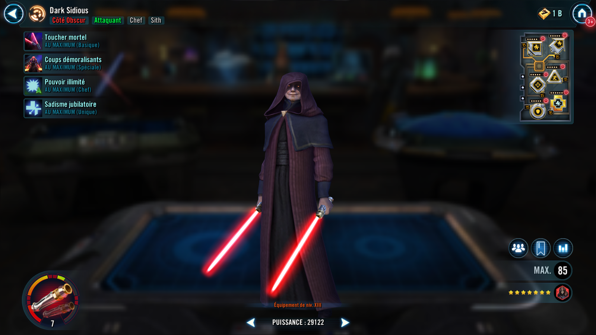
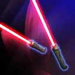

Darth Sidious
Brutal Attacker effective against Healers and Jedi while boosting allied Criticals as a Leader
Brutal Attacker effective against Healers and Jedi while boosting allied Criticals as a Leader


Deal Physical damage to target enemy and inflict Healing Immunity for 3 turns with a 50% chance (doubled if the target is debuffed) to ignore Defense.
Deal Physical damage to all enemies and inflict Damage Over Time and Expose for 2 turns. This attack inflicts two additional Damage Over Time effects on a Critical Hit.

All allies gain 15% Critical Chance and 30% Critical Damage. Sith allies gain 2% Offense until the end of encounter when they score a Critical Hit.

Darth Sidious recovers 20% of his Max Health and gains 50% Turn Meter whenever any unit is defeated. In addition, he has +35% Evasion against Jedi attacks, +50% Potency, and gains Max Health equal to his Potency percentage.
Omicron Boost : While in Territory Wars: If all allies are Sith at the start of battle, other Sith allies gain Max Health equal to half of Darth Sidious' Potency until the first time he is defeated (excludes Galactic Legends). When Darth Sidious uses Demoralizing Blows, the cooldown of the ability is reduced by 1 for each other Sith ally and Darth Sidious gains 50 Speed (stacking) for 4 turns.